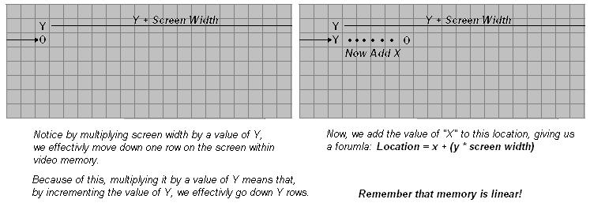

Prepare for the Kernel part 1
This is our first two-part tutorial. The first part will describe all of the new code in detail. We will cover basic 32 bit graphics programming in assembly. This includes: Basic VGA Programming concepts, accessing video display, printing strings, clearing the screen, and updating the hardware cursor. There is a little math involved, but not too much 😀
The demo itself is completed. It will be shown in the second part of this tutorial, along with an overview of the completed Stage 2 source code, including its new little FAT12 driver, Floppy driver. These are not "real" drivers by definition that we will add. However, they will help demonstrate the functionality of drivers, and why they are useful. All of the code is a heavily modified version of our FAT12 loading code from the bootloader, so I will not be describing FAT12 again in detail.
With that, Part two--as being the last tutorial for Stage 2--will go over the loading and executing of a basic (pure binary) Kernel image at 1 MB.
This two part tutorial is the last tutorial for Stage 2! When we start the Kernel, we will need to cover different executable format files. We will need to insure Stage 2 executes the object files correctly. Because of this, when we start the Kernel, we will add the loader to our current Stage 2 bootloader to insure it loads our Kernel correctly. This is later, though 😀
With all of that in mind, Part 1 of this tutorial covers:
- Basic VGA Programming Concepts
- Accessing the Display
- Printing characters
- Printing strings
- CRT Microcontroller theory and updating the hardware cursor
- Clearing the screen
This tutorial references [The infamous Tutorial 7] (fix link) a lot. That is, the Real Mode Addressing Map and Default I/O Port Addresses. It may be helpful to have that tutorial up when we talk about video address space and VGA port access.
Ready?
The Display
VGA - Theory
The Video Graphics Array (VGA) is an analog computer display standard marketed in 1987 by IBM. It is called an "Array" because it was originally developed as a single chip, replacing dozens of logic chips in a Industry Standard Architecture (ISA) board that the MDA, CGA, and EGA used. Because this was all on a single ISA board, it was very easy to connect it to the motherboard.
The VGA consists of the video buffer, video DAC, CRT Controller, Sequencer unit, Graphics Controller, and an Attribute Controller. Please note that, we will not cover everything in detail yet until we start talking about video drivers. This is primarily to preserve space, and to make things more easier as programming the VGA can get quite complex.
Video Buffer
The Video Buffer is a segment of memory mapped as Video Memory. We can change what region of memory is mapped to video memory. At startup, the BIOS maps it to 0xA0000., which means that video memory is mapped to 0xA0000. (Remember the Real Mode Address Map from Tutorial 7?) This is important!
Video DAC
The Video Digital to Analog Converter (DAC) contains the color palette that is used to convert the video data into an analog video signal that is sent to the display. This signal indicates the red, green, and blue intensities in analog form. We will go into more detail later, so don't worry if you do not understand this yet.
CRT Controller
This controller generates horizontal and vertical synchronization signal timings, addressing for the video buffer, cursor and underline timings. We will go into more detail later in this tutorial, as we need to go through the CRT Controller when updating the cursor.
Sequencer
The Sequencer generates basic memory timings for video memory and the character clock for controlling regenerative buffer fetches. It allows the system to access memory during active display intervals. Once more, we will not cover this in detail yet. We will cover everything in great detail later when looking at Video Drivers, don't worry 😀
Graphics Controller
This is the interface between video memory and the attribute controller, and between video memory and the CPU. During active display times, memory data is sent from the video buffer (Video Memory) and sent to the Attribute Controller. In Graphics Modes, this data is converted from parallel to a serial bit plane data before being sent. In text modes, Just the parallel data is sent.
Don't worry if you do not understand these yet. I do not plan on going into much detail here. We will cover everything in detail later when we talk about developing a video driver. For now, just remember that: The Graphics Controller refreshes the display from the parallel data from video memory. This is automatic based on the active display times. This simply means, that By writing to video memory (Default mapped to 0xA0000) we effectively write to video display, depending on the current mode. This is important when printing characters.
Remember that it is possible to change the address range used by the Graphics Controller. When initializing, the BIOS does just this to map video memory to 0xA0000.
Video Modes
A "Video Mode" is a specification of display. That is, it describes how Video Memory is referenced, and how this data is displayed by the video adapter.
The VGA supports two types of modes: APA Graphics, and Text.
APA Graphics
All Points Addressable (APA) is a display mode, that, on a video monitor, dot matrix, or any device that consists of a pixel array, where every cell can be referenced individually. In the case of video display, where every cell represents a "pixel", where every pixel can be manipulated directly. Because of this, almost all graphic modes use this method. By modifying this pixel buffer, we effectively modify individual pixels on screen.
Pixel: A "Pixel" is the smallest unit that can be represented on a display. On a display, it represents the smallest unit of color. That is, basically, a single dot. The size of each pixel depends heavily on the current resolution and video mode.
Text Modes
A Text Mode is a display mode where the content on the screen is internally represented in terms of characters rather then pixels, as with APA.
A Video Controller implementing text mode uses two buffers: A character map representing the pixels for each individual character to be displayed, and a buffer that represents what characters are in each cell. By changing the character map buffer, we effectively change the characters themselves, allowing us to create a new character set. By changing the Screen Buffer, which represents what characters are in each cell, we effectively change what characters are displayed on screen. Some text modes also allow attributes, which may provide a character color, or even blinking, underlined, inversed, brightened, etc.
MDA, CGA, EGA
Remember that VGA is based off of MDA, CGA, and EGA. VGA also supports a lot of the modes these adapters do. Understanding these modes will help in better understanding VGA.
MDA - Theory
Back before I was born (Seriously 😀 ) in 1981, IBM developed a standard video display card for the PC. They were the Monochrome Display Adapter (MDA), and Monochrome Display and Printer Adapter (MDPA).
The MDA did not have any graphics mode of any kind. It only had a single text mode, (Mode 7) which could display 80 columns by 25 lines of high resolution text characters.
This display adapter was a common standard used in older PC's.
CGA - Theory
In 1981, IBM also developed the Color Graphics Adapter (CGA), considered the first color display standard for PC's.
The CGA only supported a Color Palette of 16 colors, because it was limited to 4 bytes per pixel.
CGA supported two text modes and two graphics modes, including:
- 40x25 characters (16 color) text mode
- 18x25 characters (16 color) text mode
- 320x200 pixels (4 colors) graphics modes
- 640x200 pixels (Monochrome) graphics mode
It is possible to trick the display adapter in creating and discovering new, "undocumented" video modes. More on this later.
EGA - Theory
Introduced in 1984 by IBM, The Enhanced Graphics Adapter (EGA) produced a display of 16 colors at a resolution up to 640x350 pixels.
Remember that the VGA adapters are backward compatible, similar to the 80x86 microprocessor family. Because of this, and to insure backward compatibility, the BIOS starts up in Mode 7 (Originally from the MDA), which supports 80 columns, by 25 lines. This is important to us, because this is the mode we are in!
VGA Memory Addressing
Video memory used by the VGA Controller is mapped to the PC's memory from 0xA0000 to 0xBFFFF. Remember the Real Mode Memory Map from [Tutorial 7] (fix link)!
Typically, the Video Memory is mapped as the following:
- 0xA0000 - 0xBFFFF Video Memory used for graphics modes
- 0xB0000 - 0xB7777 Monochrome Text mode
- 0xB8000 - 0xBFFFF Color text mode and CGA compatible graphics modes
Do to the different addresses used in the memory mapping, it is possible to have both ECG, CGA, and VGA display adapters installed on the same machine.
It is possible to change the memory mappings used by the video adapter cards through the CRT Microcontroller. Normally this is done through Video Drivers. More on this later, though.
One can also modify how the Video Controller uses this memory. In doing so, we can create "new", or rather, "undocumented" modes. One common mode is the infamous "Mode X".
Remember that modifying the display buffer and text buffers effectively change what is displayed on screen? This is do to the video controller refreshing the display based on the current refresh rate. The Video Controller sends commands to the CRT Controller inside the Monitor through the VGA Port. This generates a Vertical and Horizontal Retrace of the CRT to refresh the monitors' display. And, because the text and display adapter is mapped to the above PC memory addresses, Writing to this region of memory changes what is displayed on screen
For an example, remember that we are in Mode 7? Mode 7 is a color text mode, hence uses memory that begins at 0xB8000. Because this is the text buffer used by the Video Controller to determine what to display, Writing to 0xB8000 effectively displays text on screen.
%define VIDMEM 0xB8000 ; video memory
mov edi, VIDMEM ; get pointer to video memory
mov [edi], 'A' ; print character 'A'
mov [edi+1], 0x7 ; character attribute
The above will display the character "A", in white, black background (The attribute), in the top left corner of the display. Too cool for school 😀
Printing characters
Okay, so how do we print a character at any x/y location on screen?
A special property about memory is how it is linear. If we reach the end of a line being displayed, the next byte is on the line right below it. Because of linear addressing, we have to be able to convert an x/y location to a linear address to render it to screen. And, a special formula to do that is: x + y * screen width.

Here is an example. Lets say, we want to print a character, 'A', into location x/y (5,5). Knowing that video memory begins at 0xb8000, and is linear, we can use the formula to convert this x/y location to an absolute address:
address = x + (y * screen width)
address = 5 + (5 * 80)
address = 5 + 400
address = 405
This means, from the start of video memory, location 5,5 is 405 bytes away.
So, add this to the base address of video memory:
0xB8000 + 405 = 0xB8195
So... by writing character 'A' to 0xB8195, we effectively write to x/y location (5,5). Cool, huh?
Knowing this, lets first provide a way to store the current location at where we are on screen. This is so that we can act like the BIOS, so that the rest of the program does not need to:
_CurX db 0 ; current x/y location
_CurY db 0
%define VIDMEM 0xB8000 ; video memory
%define COLS 80 ; width and height of screen
%define LINES 25
%define CHAR_ATTRIB 14 ; character attribute (White text on black background)
Remember that we are in Mode 7. This mode has 80 columns of characters per row, and 25 lines. And, of course, video memory begins at 0xB8000. But wait! What is the character attribute?
Text Mode 7 actually uses two bytes per character, not one. Remember this! The first byte represents the actual character, and the second byte is a ...wait for it... attribute byte! Because of this, when writing a character to screen in Mode 7, you will need to write two bytes, not one.
The attribute byte provides a way of supplying color, as well as certain attributes, such as blinking. The values can be...
- 0 - Black
- 1 - Blue
- 2 - Green
- 3 - Cyan
- 4 - Red
- 5 - Magenta
- 6 - Brown
- 7 - Light Gray
- 8 - Dark Gray
- 9 - Light Blue
- 10 - Light Green
- 11 - Light Cyan
- 12 - Light Red
- 13 - Light Magenta
- 14 - Light Brown
- 15 - White
The attribute byte is a byte that defines certain attributes, and defining both foreground and background colors. The byte follows the format:
- Bits 0 - 2: Foreground color
- Bit 0: Red
- Bit 1: Green
- Bit 2: Blue
- Bit 3: Foreground Intensity
- Bits 4 - 6: Background color
- Bit 4: Red
- Bit 5: Green
- Bit 6: Blue
- Bit 7: Blinking or background intensity
Okay, now that we have everything set up, lets print a character!
Setting up
Printing characters is a little complex because we have to track where we are, both in current x/y location and when writing to video memory. We also need to track certain characters, such as the newline character, and to watch for the end of line. And yet, we still need to update the hardware cursor to this position as well.
Putch32 is the PMode routine that will display a character in stage 2. Don't worry, we will rewrite these routines for the Kernel using C. By showing how it's done in assembly, we can compare assembly language relationships with C. More on this later.
Anyways, here's the startup code:
bits 32
%define VIDMEM 0xB8000 ; video memory
%define COLS 80 ; width and height of screen
%define LINES 25
%define CHAR_ATTRIB 14 ; character attribute (White text on black background)
_CurX db 0 ; current x/y location
_CurY db 0
;**************************************************;
; Putch32 ()
; - Prints a character to screen
; BL => Character to print
;**************************************************;
Putch32:
pusha ; save registers
mov edi, VIDMEM ; get pointer to video memory
Okay, we have some basic definitions. _CurX and _CurY will contain the current x/y location to write the character to. By incrementing _CurX, we effectively go to the next character in the line. Also note that EDI contains the base address of video memory. Now, by writing to video memory [EDI], we an display characters on screen do to the current video memory map.
Before displaying characters, we have to find out where to display it. To do this, just write it to the current x/y location (_CurX and _CurY). This is not quite simple though.
As you remember, video memory is linear, so we have to convert the x/y location into linear memory. Remember our formula x + y * screen width. This can be easily computed. However, remember that every character is two bytes in size. Remember that _CurX, _CurY, COLS, LINES, are based off characters, not bytes. i.e., COLS=80 characters. Because there are two bytes per character, we have to compare with 80*2. Simple, huh?
This makes things a little more complex, but not that hard:
;-------------------------------;
; Get current position ;
;-------------------------------;
xor eax, eax ; clear eax
;--------------------------------
; Remember: currentPos = x + y * COLS! x and y are in _CurX and _CurY.
; Because there are two bytes per character, COLS=number of characters in a line.
; We have to multiply this by 2 to get number of bytes per line. This is the screen width,
; so multiply screen with * _CurY to get current line
;--------------------------------
mov ecx, COLS*2 ; Mode 7 has 2 bytes per char, so its COLS*2 bytes per line
mov al, byte [_CurY] ; get y pos
mul ecx ; multiply y*COLS
push eax ; save eax--the multiplication
This is the first part of the formula: y * screen width (in bytes), or _CurY * (COLS*bytes per character). We store it on the stack so that we could finish the formula.
;--------------------------------
; Now y * screen width is in eax. Now, just add _CurX. But, again remember that _CurX is relative
; to the current character count, not byte count. Because there are two bytes per character, we
; have to multiply _CurX by 2 first, then add it to our screen width * y.
;--------------------------------
mov al, byte [_CurX] ; multiply _CurX by 2 because it is 2 bytes per char
mov cl, 2
mul cl
pop ecx ; pop y*COLS result
add eax, ecx
Okay then! Notice that we multiply _CurX by 2 to get the current byte location. Then, we pop the result of y * COLS and add it to the x position--completing our x+y*COLS formula.
Yay! Okay, now EAX contains the offset byte to print our character to, so lets add it to EDI--which holds the base address of video memory:
;-------------------------------
; Now eax contains the offset address to draw the character at, so just add it to the base address
; of video memory (Stored in edi)
;-------------------------------
xor ecx, ecx
add edi, eax ; add it to the base address
Okay, now EDI contains the exact byte to write to. BL contains the character to write. If the character is a newline character, we will want to move to the next row. Else, just print the character:
;-------------------------------;
; Watch for new line ;
;-------------------------------;
cmp bl, 0x0A ; is it a newline character?
je .Row ; yep--go to next row
;-------------------------------;
; Print a character ;
;-------------------------------;
mov dl, bl ; Get character
mov dh, CHAR_ATTRIB ; the character attribute
mov word [edi], dx ; write to video display
;-------------------------------;
; Update next position ;
;-------------------------------;
inc byte [_CurX] ; go to next character
cmp [_CurX], COLS ; are we at the end of the line?
je .Row ; yep-go to next row
jmp .done ; nope, bail out
Okay then! Pretty easy, huh? Oh right..to go to the next row is easy:
;-------------------------------;
; Go to next row ;
;-------------------------------;
.Row:
mov byte [_CurX], 0 ; go back to col 0
inc byte [_CurY] ; go to next row
;-------------------------------;
; Restore registers & return ;
;-------------------------------;
.done:
popa ; restore registers and return
ret
Working with strings
Okay, so we can print a character. Yippee. I am very excited to see a single character. Yeah, I don't think so 😀
To print actual information, we will need a way to print full strings. Because we already have a routine that tracks current position (and updates it), and prints the characters, all we need to do to print a string is a simple loop.
Puts32:
;-------------------------------;
; Store registers ;
;-------------------------------;
pusha ; save registers
push ebx ; copy the string address
pop edi
Okay, here's our Puts32() function. It takes one parameter: EBX, which contains the address of a null terminated string to print. Because out Putch32() function requires that BL store the character to print, we need to save a copy of EBX, so we do it here.
Now, we loop:
.loop:
;-------------------------------;
; Get character ;
;-------------------------------;
mov bl, byte [edi] ; get next character
cmp bl, 0 ; is it 0 (Null terminator)?
je .done ; yep-bail out
We use EDI to dereference the string to get the current character to display. Note the test for the null terminator. If found, we bail out. Now, to display the character... The most complex code you will ever see:
;-------------------------------;
; Print the character ;
;-------------------------------;
call Putch32 ; Nope-print it out
...Or not 😀
All we need to do now is to go to the next character, and loop:
;-------------------------------;
; Go to next character ;
;-------------------------------;
.Next:
inc edi ; go to next character
jmp .loop
.done:
;-------------------------------;
; Update hardware cursor ;
;-------------------------------;
; Its more efficiant to update the cursor after displaying
; the complete string because direct VGA is slow
mov bh, byte [_CurY] ; get current position
mov bl, byte [_CurX]
call MovCur ; update cursor
popa ; restore registers, and return
ret
Voila! We got ourselves a way to print strings in 32 bit protected mode. Not to hard, is it? Oh wait.. What is MovCur for? We will look at that next.
Updating the hardware cursor
Okay, so we can print characters and strings out now. You might notice something though: the cursor does not move! Because of this, it just stays no matter what we do. This cursor is a simple underline that the BIOS uses to indicate the current position when printing text.
This cursor is handled by the hardware. The CRT Microcontroller, in fact. So, we have to know some basic vga programming in order to move this cursor.
CRT Microcontroller
Warning for CRT users
While I encourage practicing and trying new things, please remember that, in an OS environment, you are working directly with the hardware, and have direct control over everything.
CRT Monitor failures are violent in nature, and can explode and produce sharp glass fragments to fly at high speeds. It is possible to change frequency settings greater then the devices can handle. This may increase the chances of a device or microchip to malfunction, producing unpredictable or disastrous results.
Because of this, if you, the reader, like experimenting with the code, I recommend testing all experimental code in an emulator to its fullest first, before attempting real hardware.
I will not explain everything regarding video programming yet until we talk about Video Drivers. We will look at everything in detail then, cool?
Anyhow...On to the CRT Controller!
Port Mapping
The CRT Controller uses a single Data Register which is mapped to port 0x3D5. Remember the Port table from Tutorial 7? The CRT Controller uses a special register - an Index Register, to determine the type of data in the Data Register is.
So, in order to give data to the CRT Controller, we have too write two values. One to the Index Register (Containing the type of data we are writing), and one to the Data Register (Containing the data). Not too hard 😀
The Index Register is mapped to ports 0x3D5 or 0x3B5.
The Data Register is mapped to ports 0x3D4 or 0x3B4.
There are more registers then these two (Such as the Misc. Output Register), but we will focus on these two for now.
Index Register Mapping
By default, the indices for the Index Register are mapped to the following:
CRT Microcontroller - Index Register table
| Index Offset | CRT Controller Register |
|---|---|
| 0x0 | Horizontal Total |
| 0x1 | Horizontal Display Enable End |
| 0x2 | Start Horizontal Blanking |
| 0x3 | End Horizontal Blanking |
| 0x4 | Start Horizontal Retrace Pulse |
| 0x5 | End Horizontal Retrace |
| 0x6 | Vertical Total |
| 0x7 | Overflow |
| 0x8 | Preset Row Scan |
| 0x9 | Maximum Scan Line |
| 0xA | Cursor Start |
| 0xB | Cursor End |
| 0xC | Start Address High |
| 0xD | Start Address Low |
| 0xE | Cursor Location High |
| 0xF | Cursor Location Low |
| 0x10 | Vertical Retrace Start |
| 0x11 | Vertical Retrace End |
| 0x12 | Vertical Display Enable End |
| 0x13 | Offset |
| 0x14 | Underline Location |
| 0x15 | Start Vertical Blanking |
| 0x16 | End Vertical Blanking |
| 0x17 | CRT Mode Control |
| 0x18 | Line Compare |
By writing an index offset value into the index Register, it indicates what register the Data Register points to (That is, what it references.)
Most of what is in the above table we don't need to worry about right now. However, look at indices 0xE and 0xF for a moment:
- 0x0E: Cursor Location High Byte
- 0x0F: Cursor Location Low Byte
Yippee! These indices refer to the current offset location of the hardware cursor. This offset is just an x/y location (as a linear location - remember the formula x + y * screen width!), split into its high and low bytes.
Moving the hardware cursor
Okay, first remember that the indices for the cursor are 0x0E and 0x0F, which we have to first put into the Index Register at port 0x3D4:
mov al, 0x0f
mov dx, 0x03D4
out dx, al
This puts index 0x0F (the cursor low byte address) into the index register. Now, this means the value put into the Data Register (Port 0x3d5) indicates the low byte of the cursor location:
mov al, bl ; al contains the low byte address
mov dx, 0x03D5
out dx, al ; low byte
This sets the new low byte location for the cursor! Cool, huh? Setting the high byte is exactly the same, except we have to set the index to 0x0E, which is, again, the high byte index.
Here is the complete routine:
;**************************************************;
; MoveCur ()
; - Update hardware cursor
; parm/ bh = Y pos
; parm/ bl = x pos
;**************************************************;
bits 32
MovCur:
pusha ; save registers (aren't you getting tired of this comment?)
;-------------------------------;
; Get current position ;
;-------------------------------;
; Here, _CurX and _CurY are relative to the current position on screen, not in memory.
; That is, we don't need to worry about the byte alignment we do when displaying characters,
; so just follow the formula: location = _CurX + _CurY * COLS
xor eax, eax
mov ecx, COLS
mov al, bh ; get y pos
mul ecx ; multiply y*COLS
add al, bl ; Now add x
mov ebx, eax
;--------------------------------------;
; Set low byte index to VGA register ;
;--------------------------------------;
mov al, 0x0f ; Cursor location low byte index
mov dx, 0x03D4 ; Write it to the CRT index register
out dx, al
mov al, bl ; The current location is in EBX. BL contains the low byte, BH high byte
mov dx, 0x03D5 ; Write it to the data register
out dx, al ; low byte
;---------------------------------------;
; Set high byte index to VGA register ;
;---------------------------------------;
xor eax, eax
mov al, 0x0e ; Cursor location high byte index
mov dx, 0x03D4 ; Write to the CRT index register
out dx, al
mov al, bh ; the current location is in EBX. BL contains low byte, BH high byte
mov dx, 0x03D5 ; Write it to the data register
out dx, al ; high byte
popa
ret
That was easy, huh?
Next up: Clearing the screen!
Clearing the screen
Because we already have a way to display text, just loop, and reset the current position to 0! This is surprisingly simple...
;**************************************************;
; ClrScr32 ()
; - Clears screen
;**************************************************;
bits 32
ClrScr32:
pusha
cld
mov edi, VIDMEM
mov cx, 2000
mov ah, CHAR_ATTRIB
mov al, ' '
rep stosw
mov byte [_CurX], 0
mov byte [_CurY], 0
popa
ret
Easy, huh?
Okay, so we have a way to print text, which also updates the hardware cursor, and clear the screen. If we wanted to, we can expand this stage 2 loader to include a small menu and advanced options when giving control to the Kernel. More on this later...
Demo

I decided to create a little demo to demonstrate everything in this tutorial. The next tutorial builds directly on this code.
This tutorial uses everything we talked about in this tutorial. It sets the foreground and background colors based on the character attribute byte. And, because of our ClrScr32() routine, effectively clears the screen to that background color. Cool, huh?
You can download the demo Here.
Conclusion
I was pretty stumped on how to go about these next tutorials. I believe (Hope!) splitting it in two parts was a good solution.
We have went over a lot of stuff here, more specifically graphics concepts. We talked about basic VGA concepts, printing characters, strings, clearing the screen, and updating the hardware cursor. By changing the attribute byte of the text we print out, we could easily print characters out in all shorts of colors! You can even get a new background by changing the color in the attribute byte, and calling our ClrScr32 () function! Cool, don't you think? It certainly beets the boring black and white... 😀
The next tutorial finishes Stage 2, and loads and executes a basic pure binary 32 bit Kernel image at 1 MB. Don't worry--When we get into the Kernel section of this series, we will change the way the Kernel is built, and modify how it is loaded. This will allow us to load the Kernel as an object format--allowing it to import or export symbols, and mix it in with C. I cannot wait!
The next tutorial is not a tutorial in a sense of learning new things. Instead, it covers all of the code that has already been explained. This code, however, is modified for better code layout, and provide the interface (and separation) between a basic Filesystem (FAT12) Driver and a Floppy Driver. Nonetheless, it is the closing tutorial for Stage 2.
We will go back to Stage 2 a bit later, as Stage 2 can be modified to provide more options, or even to support Multibooting, and Boot Options. We shall see... 😉